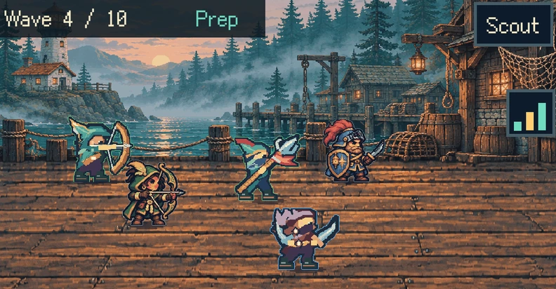
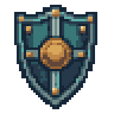
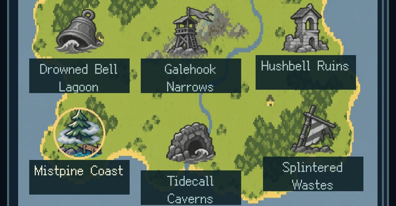
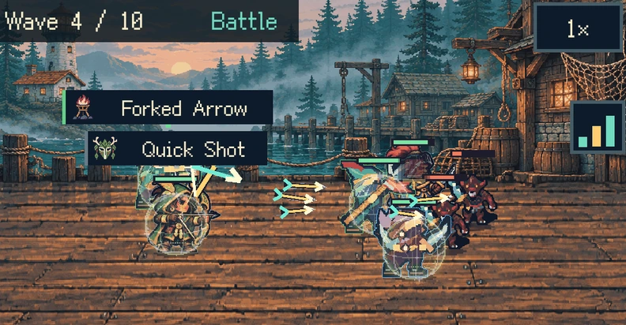
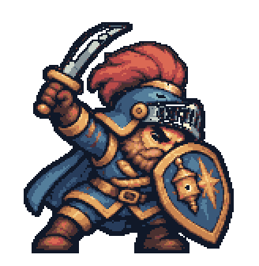
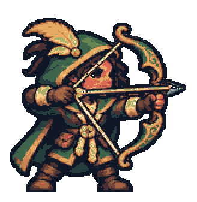
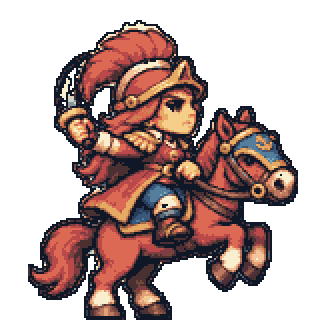

Muster your squad
Match three symbols to recruit. Keep your gold for interest, or spend it on another spin.
Pull the lever to recruit your defenders. Build a squad that can hold the harbor when the next wave comes ashore.

Explore the game
Match three symbols to recruit. Keep your gold for interest, or spend it on another spin.

Pick a port on the sea chart. Clear its routes for first-clear bounties and a shot at Endless.

Set shields in front and archers behind them. After the wave, check who dealt the damage and who took it.

Shield infantry

Archer

Cavalry
Mage